Russian Post
Russian Post exteriors and Interiors
photographed by Katya Mukha

Russia's post office is a geographically scaled organisation. It has 45, 000 branches, this is greater than the number of McDonald's restaurants in the world. On average 3 million people across the country visit a post office daily.
There is no project planning for the Russian Post, branches are similar in functions, but different in architectural design. Post offices In Moscow, Yekaterinburg and in other bigger cities are recognised architectural monuments. Meantime common postal brunches are considered as something ordinary, lacking cultural and aesthetic values. Rural brunches became parts of already purpose built buildings, changing their appearance and forming a modern social landscape by bright corporate symbolism, adding to a peculiarity that is inherent to Russia.
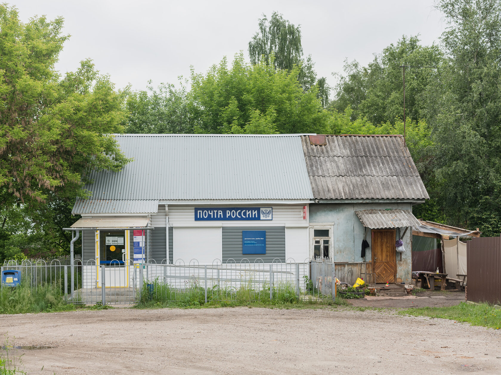
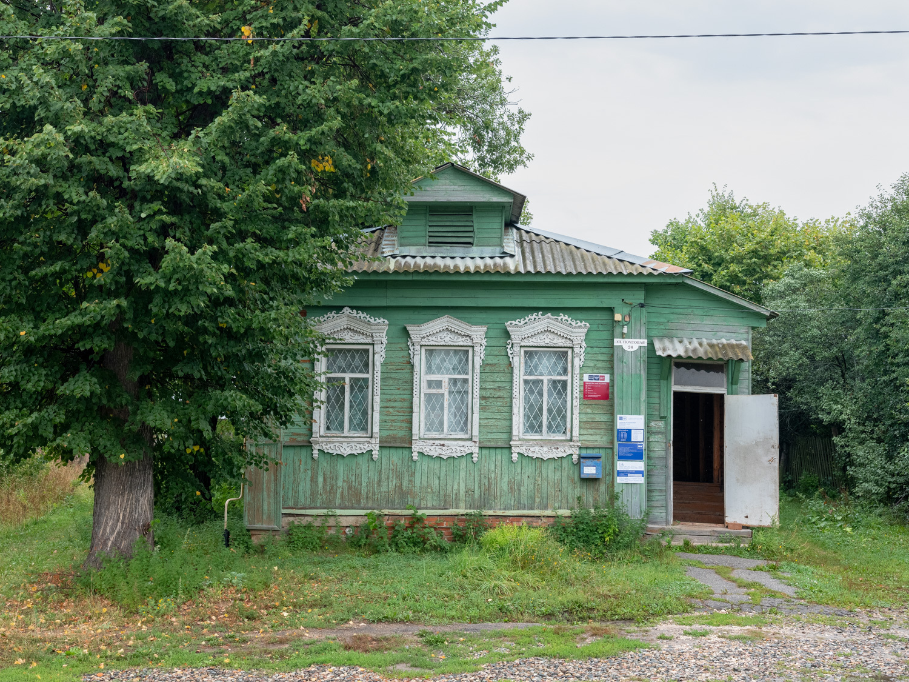
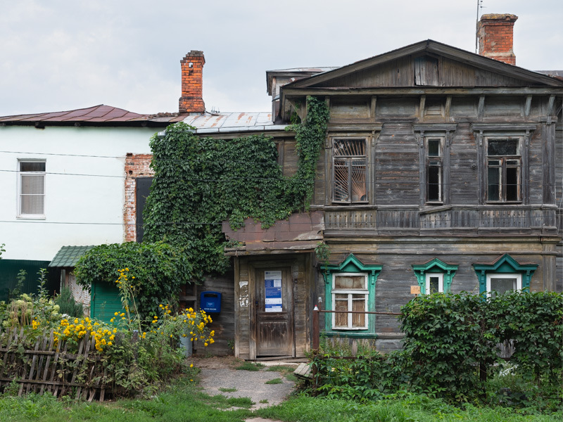
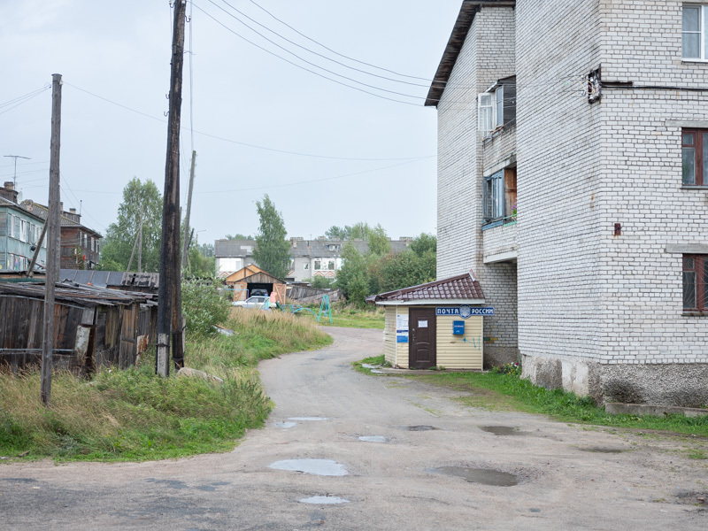
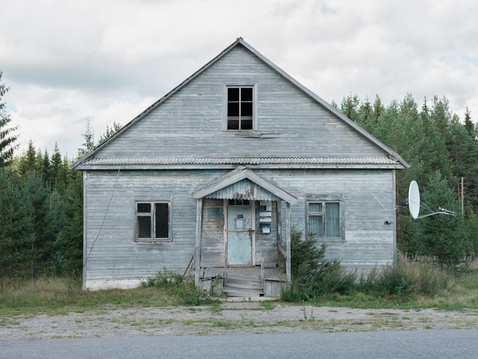
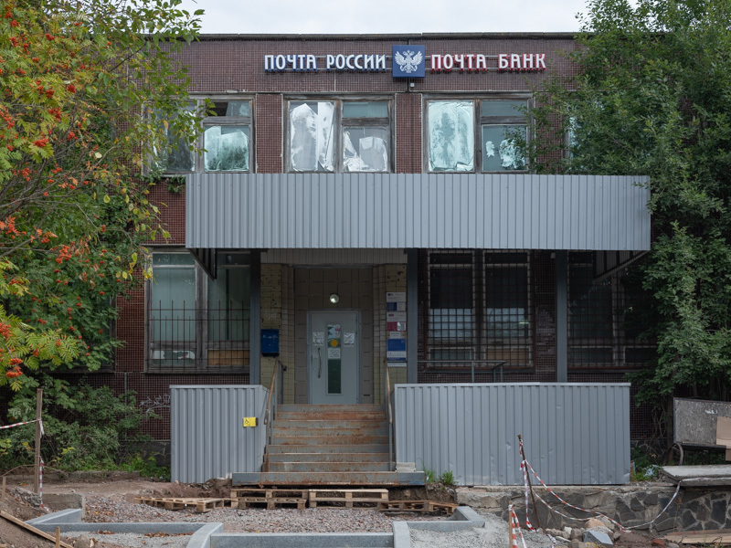
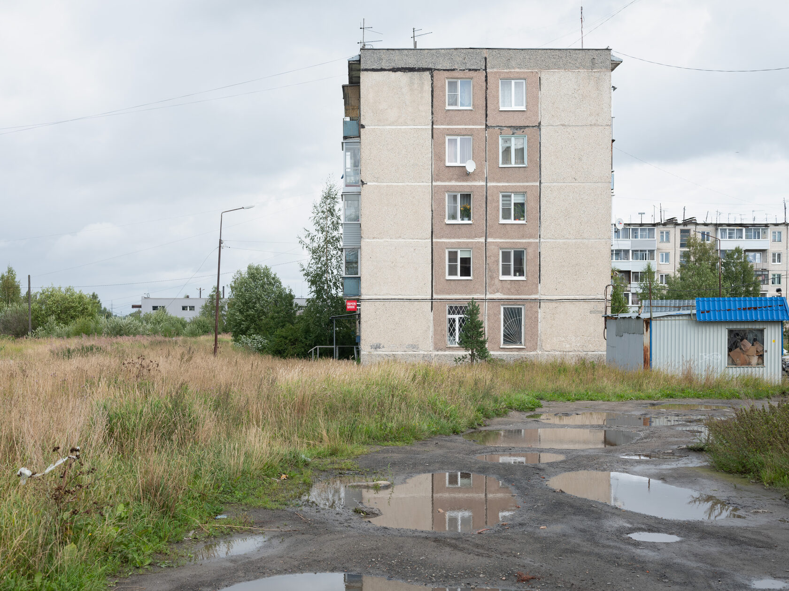
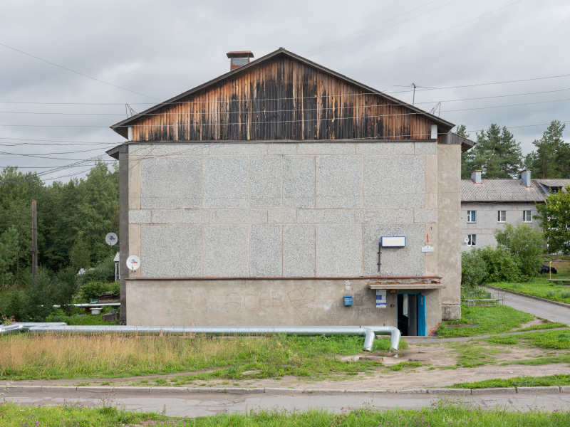
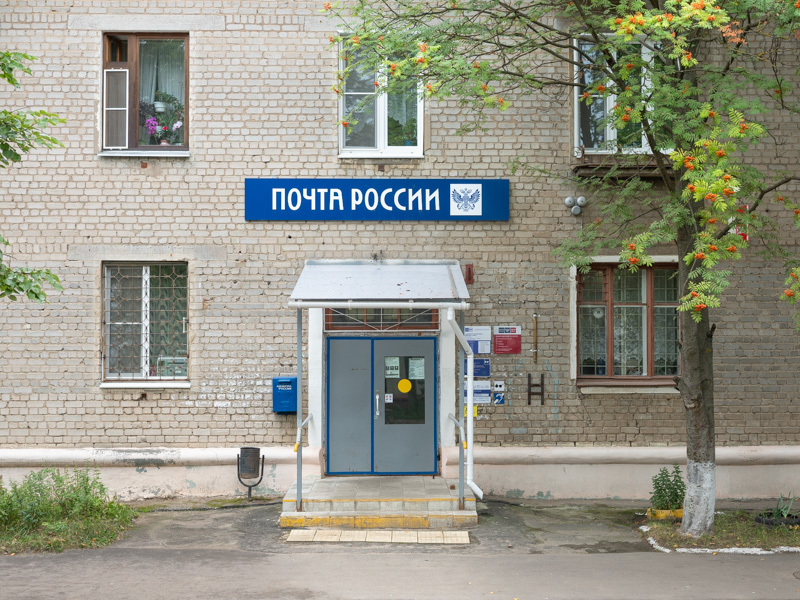
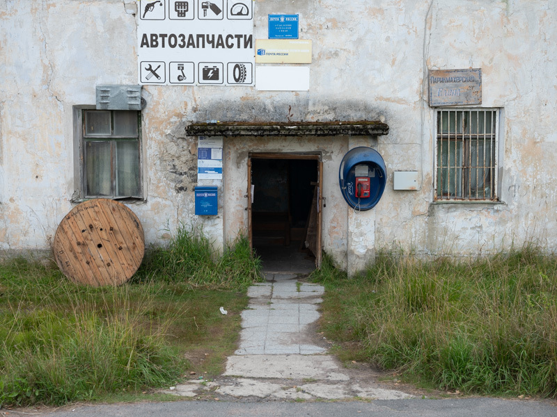
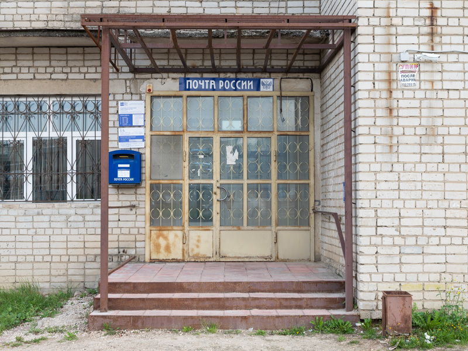
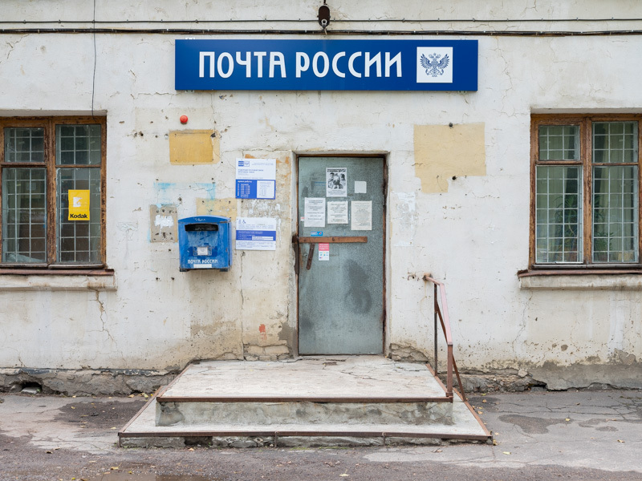
There is no project planning for the Russian Post, branches are similar in functions, but different in architectural design. Post offices In Moscow, Yekaterinburg and in other bigger cities are recognised architectural monuments. Meantime common postal brunches are considered as something ordinary, lacking cultural and aesthetic values. Rural brunches became parts of already purpose built buildings, changing their appearance and forming a modern social landscape by bright corporate symbolism, adding to a peculiarity that is inherent to Russia.
I photograph Russian Post exteriors and interiors, depicting how the country's landscape looks today I have traveled over 4500 km and photographed 140 branches. Like a stamp collector, I am looking for the most unusual and memorable places. I travel via federal highways, visit outermost villages and towns, that way I get to learn about my own country.
The earliest letters and parcels were sent in ancient Russia more than a thousand year ago and the very first stations appeared in the XIII century. In modern days the postal services like many others worldwide are going through a crisis. Development of internet services caused the Russian Post to lose its monopoly over delivery of information, then there were issues with long queues, unpredictable delivery times and a lack of care for parcels resulted in the Post office becoming a meme and a symbol of an exceptionally bad service. Jokes can be found in the internet and heard on federal TV channels. The company is trying to improve by regaining people's trust and becoming an independent business with reduced government support. These changes are currently only visible in the capital, but not seen in rural Russia.
My project is not exclusively about the Russian Post, it is about its walls, windows, sign boards and doors, flower beds, street lights and ramps. About its diversity in one major organisation. All these details change from city to village, from region to region and they tell us about how life is arranged and what is visual environment in modern Russia.
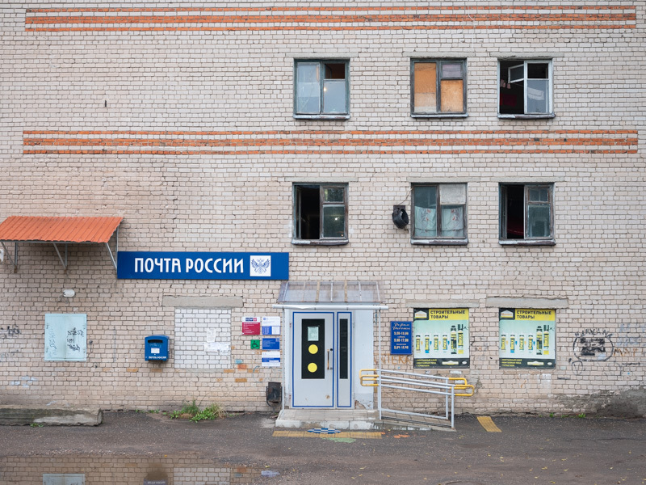
The work on the project started in August 2021 and continues in the present.
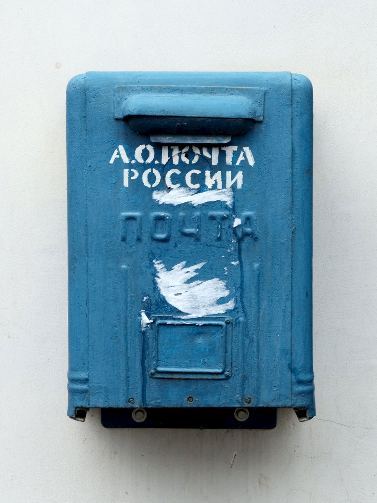
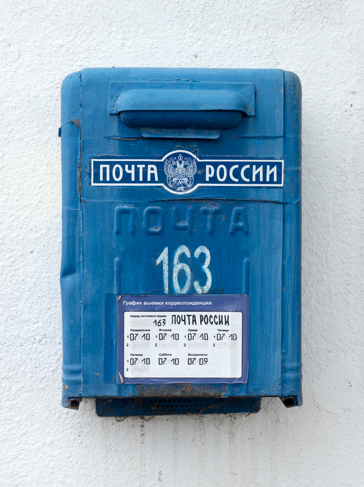
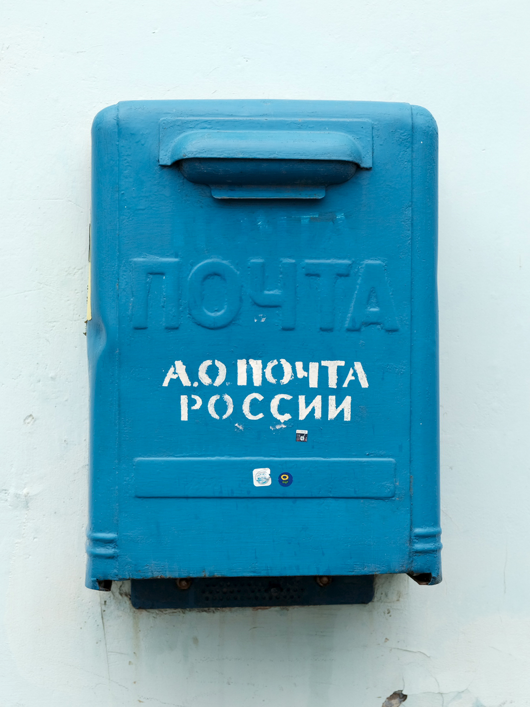
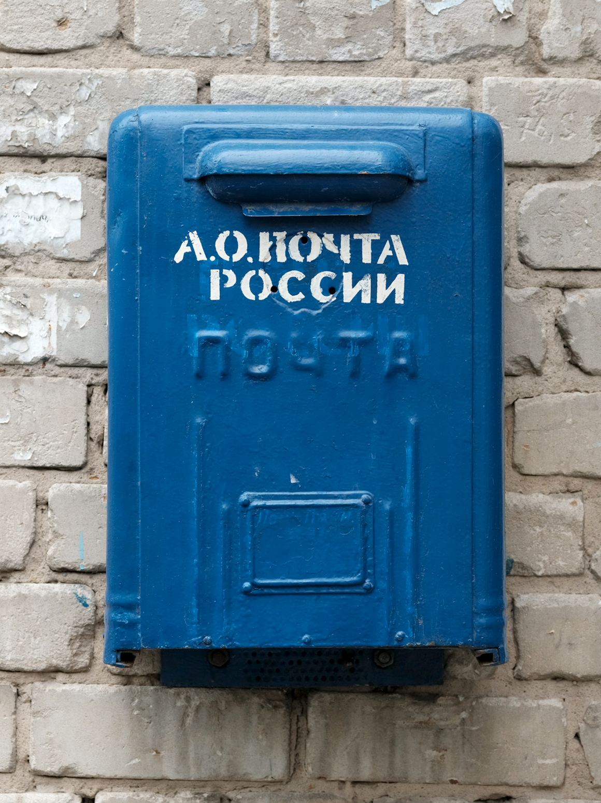